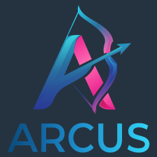
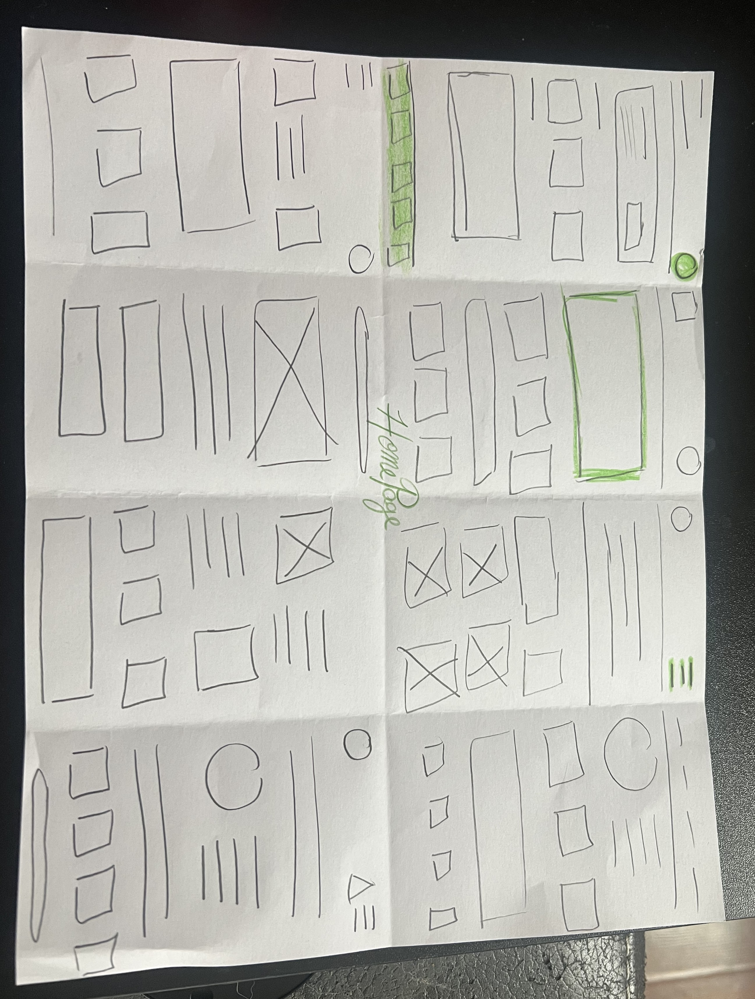
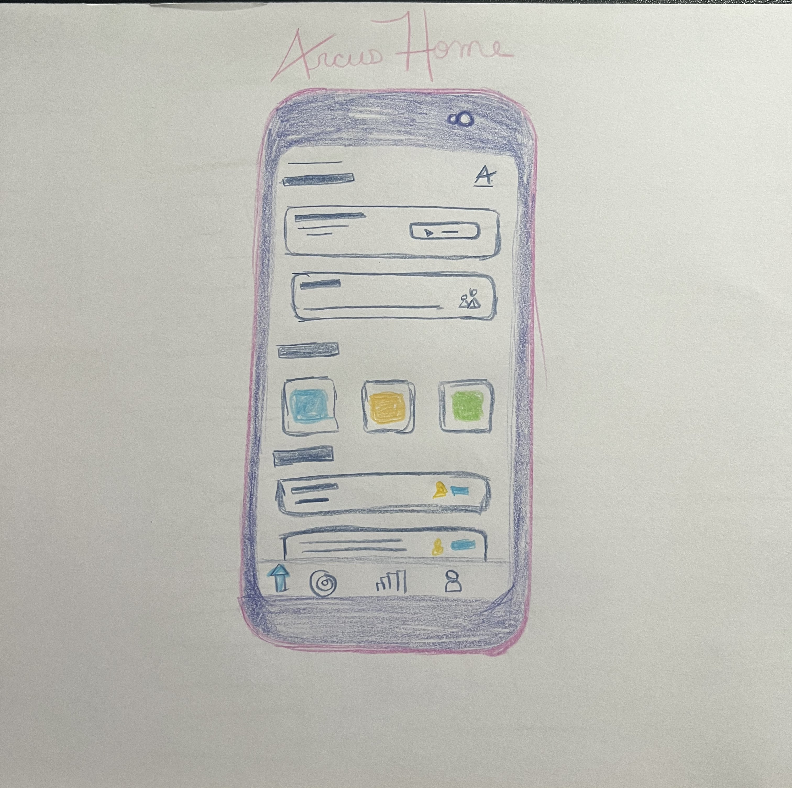
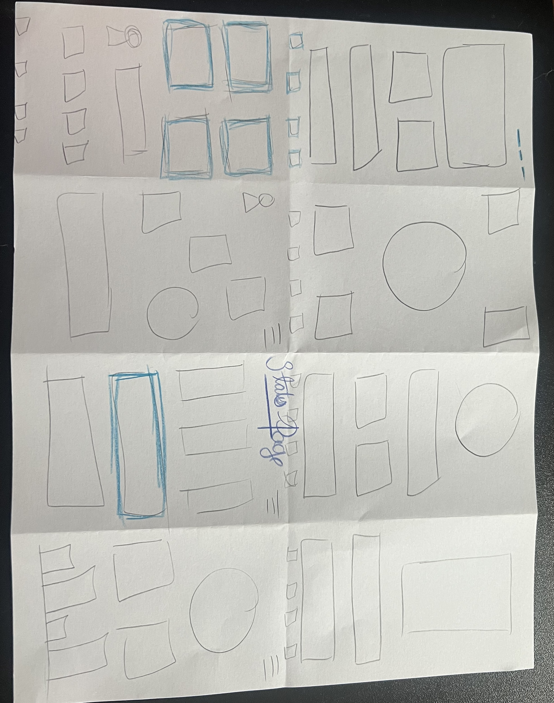
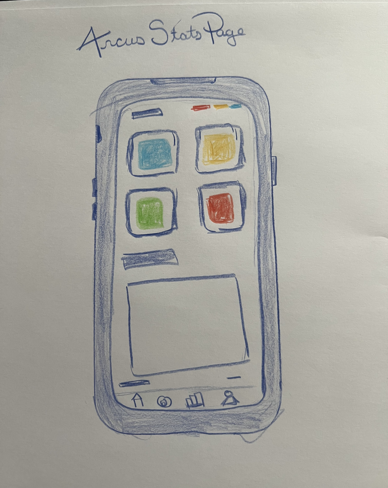

Visual Design



Creating a User‑Centered Archery Experience
A mobile app designed to help young archers stay engaged by making their progress visible, meaningful, and encouraging. When archers can see how they're growing, they're more likely to stay curious, confident, and connected to the sport. This app supports that journey through intuitive tracking, gentle guidance, and a focus on long‑term motivation.
Many archers struggle to stay engaged over time due to limited progress visibility, manual and inconsistent tournament tracking, and a lack of tools that support the mental side of the sport. These challenges are especially noticeable among younger or newer archers, who often lose motivation when improvement feels unclear or overwhelming.
The goal of this project is to design a user‑centered archery app that supports archers of all experience levels by making progress easy to understand, simplifying tournament tracking, and providing mental‑training tools that strengthen focus, confidence, and long‑term engagement.
I conducted surveys and informal interviews with local archers to understand their motivations, challenges, and reasons for disengaging from the sport. I also reviewed existing archery apps to identify usability gaps and opportunities for a more engaging experience.
This pain point highlighted the need for clear, visual feedback that helps archers understand how they're improving over time. Moving forward, I focused on designing progress charts and alternate training views that make growth easy to see and celebrate.
Seeing how quickly motivation fades, especially for young archers, led me to incorporate achievement systems and engaging milestones. These features are designed to keep users connected to the sport and excited to continue training.
Archers currently rely on manual methods to track tournament, league, and competitive scores, making it difficult to maintain accurate records or see long‑term progress. This insight guided the decision to include simple score importing and organized competitive history within the app.
The absence of mental‑training tools within apps revealed a major gap in the archery experience, shaping the app's focus on mindset, confidence, and mental clarity. This led to features like mental drills and shot‑reflection tools that help archers understand how their mental state affects performance.
As a league manager, Holden needs a simple way to track competitive results so he can quickly determine winners and monitor archer progress without relying on manual methods.
As a young archer, Riley needs a clear, supportive way to track improvement so she can stay motivated and understand her progress even when scores fluctuate.
League participation plays a meaningful role in keeping archers engaged, regardless of age or experience level. Structured competitive environments offer clear progress tracking, consistent milestones, and a sense of accomplishment that can be hard to maintain through casual practice alone. By supporting league management within the app, I aimed to strengthen this ecosystem: making results easier to track, reducing administrative friction, and helping archers stay connected to their community.
For Holden, simplifying league setup and score tracking not only improves his workflow but also directly benefits the athletes he supports. Clear standings, organized results, and accessible progress data contribute to a more motivating and rewarding experience for archers, reinforcing long‑term involvement in the sport.
| Create Account | Set Up League | Import / Enter Results | Review Progress | Determine Winners | Share Results | |
|---|---|---|---|---|---|---|
| Tasks |
|
|
|
|
|
|
| Feelings |
Curious
Hopeful
Slightly intimidated
|
Focused
Mildly overwhelmed
Eager
|
Relieved
Frustrated by manual entry
|
Motivated
Confident
Organized
|
Excited
Empowered
Satisfied
|
Accomplished
Proud
Content
|
| Opportunities |
|
|
|
|
|
|




Tap, swipe, or use the arrows to explore the prototype flow.
To evaluate the clarity and usability of the core features in the Arcus app, I conducted a hybrid moderated and unmoderated usability study. I began each session by being available to answer questions and observe initial interactions, then allowed participants to explore the prototype independently over several days. This approach helped me understand both first‑impression usability and real‑world usage patterns.
Alongside testing my own designs, I also aimed to learn what users felt was missing from the archery apps they currently use and what additional benefits they wished those tools offered.
This method allowed me to capture both guided insights and natural, self‑directed behavior.
Participants instinctively looked for a "history" or "recent scores" section and felt frustrated when they had to navigate multiple screens to find past results.
While users liked the idea of visual progress tracking, some were unsure what certain icons or color indicators represented.
Holden (league manager persona) emphasized that entering multiple scores at once should be quick and error‑proof, especially during busy league nights.
Younger archers, like Riley, appreciated supportive language but wanted clearer explanations of what their progress meant: “Am I improving? By how much?”
Participants consistently mentioned gaps in the tools they currently use: difficulty tracking long‑term progress, no mental‑focus features, limited league support, too much manual data entry, lack of personalization, and inability to review past tournament data.
These insights validated the direction of the app and highlighted opportunities to differentiate the experience.
Resolved issues such as the Quick Start page freezing before fully loading.
Reduced steps and friction for both individual practice and league scoring.
Added clearer labels and context to charts and indicators.
Confidence‑building prompts, robust league management, automated score importing, and personalized progress insights.
This hybrid study provided a balanced view of both guided and natural user behavior. The insights helped refine the app's core flows and validated the need for a tool that supports both the practical and mental sides of archery. By understanding what users struggle with in existing apps, I was able to design an experience that feels clearer, more supportive, and more aligned with how archers actually train, compete, and grow.
Based on user feedback and gaps identified in existing archery apps, several opportunities emerged to further enhance the experience for both archers and league managers.
Reduce manual setup time and minimize errors during busy league nights with auto‑assigned lanes for each session.
A centralized standings hub allowing archers and coaches to quickly check rankings, results, and progress.
Built‑in communication for coaching, motivation, reminders, and feedback directly through the app.
Simplify the information architecture to reduce cognitive load and make key features easier to find.
The usability study provided clear direction for refining the core experience of the archery app. By observing both guided and independent interactions, I gained insight into how archers and league managers naturally navigate the interface, what they value most, and where they encounter friction. The improvements made thus far have significantly strengthened the clarity and usability of the app's foundation.
Beyond immediate design changes, the study revealed deeper opportunities to support the archery community. Users consistently expressed a desire for features missing in existing tools, such as better league management, clearer standings, and more personalized motivation. These insights helped shape a roadmap of future enhancements, including automatic lane assignment, streamlined navigation, and communication tools for coaches and athletes.
This project also reinforced my own growth as a designer. I learned the value of giving users space to explore independently, the importance of listening for what isn't being said, and how meaningful it is to design for a community I'm personally connected to.
As a proud member of the archery community, this project is not a one‑and‑done case study for me. It will continue to mature and evolve just as archers do — all through practice, iteration, and a commitment to growth.
My goal is to keep refining this tool alongside the people who inspire it, ensuring it remains supportive, intuitive, and genuinely helpful for athletes and coaches alike.